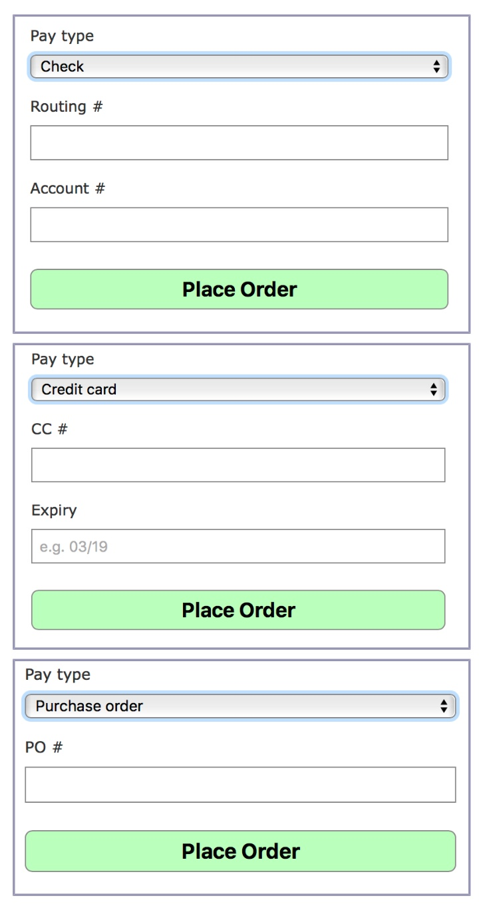

THIS IS A MAJOR PROJECT. You'd better start working on it sooner than later.
In this project, we will add several additional features to the Depot app:
Task G: Check Out!
Complete Iteration G1. As always, Skip all steps pertaining to testing.
In order to prevent the user from placing an order while there is nothing in his/her cart, update the following line in app/controllers/orders_controller.rb:
...
before_action :ensure_cart_isnt_empty, only: [:new, :create]
...Also, in order to better line up the "Empty cart" and "Checkout" buttons at the bottom of the shoppoing cart, do the following adjustments:
Update app/assets/stylesheets/carts.scss:
.carts {
...
...
.actions .button_to {
display: inline-block;
}
}Update app/views/carts/_cart.html.erb:
...
<div class="actions" align="right">
...
</div>
...Skip the entire Iteration G2 all together.
Add the "Checkout" button at bottom of the shopping cart on the SPA catalog page (the one that we created in Project 5). A click on this button should send you to the /orders/new page where you place the order by filling up a form with your name, address, etc. (Same form as created in Iteration G1 above)
Hints:
Remember, we did something very similar to this at the end of Project 4 where we temporarily redirected to a new page (i.e. the Cart page) to deal with "Add to Cart" buttons on the SPA catalog page.
We are doing something very similar.
On the client side, in the Cart ReactJS component, next to the Empty Cart button, add Checkout and associate its onClick attribute with a callback function say handleCheckout. In handleCheckout, send an ajaxified HTTP GET request to the server at the url /orders/new/.
When the response comes back (it is going to be a JSON), redirect to the new page accordingly. You will find the following statement useful:
window.location = response.data.redirect_url;On the server side, in the new method of OrdersController, add the following to send back a JSON in response to the request from the client in the previous step:
...
respond_to do |format|
format.html
format.json { render json: {"redirect":true,"redirect_url": new_order_path }}
end
...Git alert
In this part, we are going to create a reusable react component to dynamically display additional fields based the chosen Pay Type in the Order form (see image below).

The basic idea of how to make it work is covered in "Iteration H1: Adding Fields Dynammically to a Form", however, since we use Webpacker itself for the job whereas the book does not, the directory structure and some of the syntax used in Iteration H1 are quite different from ours. So do the following
BTW, although being part of the order form, sensitive information such as credit number, check routing #, etc. are neither included in the
Ordermodel nor saved in the database on the server. They are there simply for the purpose of illustrating React and won't cause any security concerns whatsoever.
The PayTypeSelector react component that we are going to create and all the components contained in it will be part of a component family order_form. (We will complete order_form later.)
So create the following directory structure and three files:
Then put some code in app/javascript/order_form/components/PayTypeSelector.jsx:
import React from 'react';
export default class PayTypeSelector extends React.Component {
render = () => {
return(
<div>
A boilerplate React component for verification purpose
</div>
);
};
}In app/javascript/order_form/pay_type_selector.js:
import React from "react";
import ReactDOM from "react-dom";
import PayTypeSelector from "./components/PayTypeSelector";
document.addEventListener("DOMContentLoaded", () => {
const order_pay_type = document.querySelector("#order_pay_type");
ReactDOM.render(<PayTypeSelector />, order_pay_type);
});And in app/javascript/packs/pay_type_selector.jsx:
import "order_form/pay_type_selector";Next, in app/views/orders/_form.html.erb, REPLACE the html div for the pay type field with the following:
...
<%= content_tag :div,
id: "order_pay_type" do %>
<%= javascript_pack_tag 'pay_type_selector' %>
<% end %>
...Give it a test in your browser -- add some products in your cart and place the order by clicking the "Checkout" button, the react component that displays "A boilerplate React component for verification purpose" should show in the form.
Warning: You can't proceed without passing the test above.
Replace the entire contents of app/javascript/order_form/components/PayTypeSelector.jsx with Itration H1: PayTypeSelector.jsx
Create a new react component app/javascript/order_form/components/NoPayType.jsx
Then add the code from Itration H1: NoPayType.jsx
Create a new react component app/javascript/order_form/components/CreditCardPayType.jsx
Then add the code from Itration H1: CreditCardPayType.jsx
Create a new react component app/javascript/order_form/components/CheckPayType.jsx
Then add the code from Itration H1: CheckPayType.jsx
Create a new react component app/javascript/order_form/components/PurchaseOrderPayType.jsx
Then add the code from Itration H1: PurchaseOrderPayType.jsx
Give it a test in your browser -- add some products in your cart and place the order by clicking the "Checkout" button. Now see how additional fields are displayed dynamically based on the pay type that you choose.
Git alert
So far, we have been playing with only one type of relationship between two Rails models (equivalently, between two database tables) -- Many-to-One (or so called m-to-1). For instance,
LineItem (many) to Product (one); LineItem (many) to Order (one); LineItem (many) to Cart (one)In this task, we are going to build a Many-to-Many (or so called m-to-n) relationship between models, specifically, between Order and Product. As you will see, such a relationship is constructed via another model LineItem.
Since
LineItemis an exiting model withbelongs_to :orderandbelongs_to :products, we don't need to make any update to it. Otherwise, such a "bridge" model needs to be separately created.As you see below, we use
has_many :throughto specify the m side of the m-to-n relationship. You may also notice in literature the use ofhas_and_belongs_to_many.The simplest rule of thumb is that you should set up a
has_many :throughrelationship if you need to work with the relationship/join model (e.g.LineItem) as an independent entity that contains validations, callbacks, or extra attributes (e.g.quantity). If you don’t need to do any of such extra work with the relationship/join model, it may be simpler to set up ahas_and_belongs_to_manyrelationship (though you’ll need to remember to create the joining table in the database).
Add the line below to app/models/products.rb:
has_many :orders, through: :line_items Add the line below to the show method in ProductsController:
@orders = @product.ordersAdd the following to the end of app/views/products/show.html.erb:
<div class="container">
<h3>Who ordered this book?</h3>
<table class="table table-striped">
<tr>
<th>Name</th>
<th>Address</th>
<th>Email</th>
<th>Pay type</th>
<th>Nr. Copies</th>
</tr>
<% @orders.each do |order| %>
<tr>
<td><%= order.name %></td>
<td><%= order.address %></td>
<td><%= order.email %></td>
<td><%= order.pay_type %></td>
<% order.line_items.each do |line_item| %>
<% if (@product.id == line_item.product_id)%>
<td><%= line_item.quantity %></td>
<% end %>
<% end %>
</tr>
<% end %>
</table>
</div>Now, in your browser, you can go to the show page for one of the products (e.g. /products/1) and see if all orders containing such a product are listed.
What we did above only completed half of the many-to-many relationship between Product and Order (Product --> Order). Now do the other half (Order --> Product) by modifying relevant files such that on the show page for a particular order, all products contained in that order are listed.
Git alert
As the orders keep coming in (what a business! :-)), we would like to paginate the orders when we display them in the "orders/" page.
Add the following two gems to Gemfile and bundle install them:
gem 'faker'
gem 'kaminari'In the lib/ folder, add the following file:
load_orders.rb:
Order.delete_all
99.times do |n|
name = Faker::Name.name
email = Faker::Internet.safe_email(name)
address = Faker::Address.street_address
pay_type = "Check"
Order.create( name: name,
email: email,
address: address,
pay_type: pay_type
)
endThen run the command rails runner lib/load_orders.rb to make 99 faked orders.
In the index method of OrdersController, add a new line after the @orders = Order.all line:
@orders = @orders.order('created_at desc').page params[:page]At the bottom of app/views/orders/index.html.erb, add the following line:
<p><%= paginate @orders %></p>In the Order model, specify the number of orders per page:
paginates_per 10Add the following to app/assets/stylesheets/orders.scss
.orders .pagination {
background: #008000;
a {
color: #bfb;
text-decoration: none;
}
a:hover {
background: none;
color: white;
}
}Restart the servers, go to the /orders page and see how those 99+ orders are paginated.
Git alert
Task I: Processing Emails and Payments Efficiently
Skip Iteration I1
SendGrid, a cloud based email delivery and management provider. Please sign up a free account at https://sendgrid.com/.Skip the entire Iteration I2 all together.
Step 1: Configuring how emails to to be sent
Add the following to config/environments/development.rb:
...
# config.action_mailer.raise_delivery_errors = false
config.action_mailer.raise_delivery_errors = true
config.action_mailer.delivery_method = :smtp
host = 'localhost'
config.action_mailer.default_url_options = { host: host }
ActionMailer::Base.smtp_settings = {
:address => 'smtp.sendgrid.net',
:port => '587',
:authentication => :plain,
:user_name => ENV['SENDGRID_USERNAME'],
:password => ENV['SENDGRID_PASSWORD'],
:domain => 'localhost',
:enable_starttls_auto => true
}
...Note, on Cloud 9, since it seems port #587 is blocked, the configuration needs to be a bit different:
Replace "your-project-name" with your actual project name for host.
...
# config.action_mailer.raise_delivery_errors = false
config.action_mailer.raise_delivery_errors = true
config.action_mailer.delivery_method = :smtp
host = 'your-project-name.c9users.io'
config.action_mailer.default_url_options = {host: '0.0.0.0:8080' }
ActionMailer::Base.smtp_settings = {
:address => 'smtp.sendgrid.net',
:port => '2525',
:authentication => :plain,
:user_name => ENV['SENDGRID_USERNAME'],
:password => ENV['SENDGRID_PASSWORD'],
:domain => 'c9users.io',
:enable_starttls_auto => true
}
...Add the following to config/environments/production.rb:
Replace "yourfirstname-yourlastname" with your actual first and last names for host.
...
# config.action_mailer.raise_delivery_errors = false
config.action_mailer.raise_delivery_errors = true
config.action_mailer.delivery_method = :smtp
host = 'project6-yourfirstname-yourlastname.herokuapp.com'
config.action_mailer.default_url_options = { host: host }
ActionMailer::Base.smtp_settings = {
:address => 'smtp.sendgrid.net',
:port => '587',
:authentication => :plain,
:user_name => ENV['SENDGRID_USERNAME'],
:password => ENV['SENDGRID_PASSWORD'],
:domain => 'heroku.com',
:enable_starttls_auto => true
}
...As you see above, no matter it's during development on your local computer, or on cloud 9, or in production on Heroku, the username and password at SendGrid need to be set up as two environmental variables (safer than saving such sensitive information in any file). Furthermore, there is a gem figaro that we can use to encrypt the environment variables.
Add the this gem to Gemfile and bundle install it:
gem 'figaro'Then run the command below. It will create the config/application.yml file and add it into your .gitignore:
bundle exec figaro installThen edit config/application.yml:
SENDGRID_USERNAME: <your_sendgrid_username>
SENDGRID_PASSWORD: <your_sendgrid_username>Note: First, since config/application.yml is in .gitignore, git won't keep track of it for you between different git pushes, branches, and repos., therefore, when testing your project, if you ever run into the problem of sending emails, you may have to re-create this file; second, on Heroku, you need to run one extra command to make figaro to work: figaro heroku:set -e production. See Part VI of this instruction document later.
Restart the servers
Step 2: Determining when to send emails
Run the command
rails g mailer OrderNotifier received shippedModify app/mailers/order_notifier_mailer.rb:
class OrderNotifierMailer < ApplicationMailer
default from: "admin@depot.com"
def received(order)
@order = order
mail to: order.email, subject: 'Pragmatic Store Order Confirmation' do |format|
format.html
end
end
def shipped(order)
@order = order
mail to: order.email, subject: 'Pragmatic Store Order Shipped' do |format|
format.html
end
end
endIn the create method of OrdersController, right after the line session[:cart_id] = nil, add the following
OrderNotifierMailer.received(@order).deliverStep 3: Specifying the template of emails
Replace the contents of app/views/order_notifier_mailer/received.html.erb with
<h3>Pragmatic Order Reveived</h3>
<p>
This is just to let you know that we've received your recent order:
</p>
<%= render @order %>Create a partial _order.html.erb in the app/views/orders folder:
<h2>Your Order</h2>
<table>
<%= render(order.line_items) %>
<tr class="total_line">
<td colspan="2">Total</td>
<td class="total_cell"><%= number_to_currency(order.total_price) %></td>
</tr>
</table>In the partial file app/views/line_items/_line_items.html.erb, enclose the '-' button inside an if statement such that it does not show in the email.
...
<% if (@order == nil) || (@order.total_price == 0) %>
<td> <%= button_to '-', decrement_line_item_path(line_item), method: :patch, remote: true %></td>
<%end%>
...Finally, add the total_price method (if you don't have one yet) in app/models/order.rb. You may simply copy this method from app/models/cart.rb.
Restart the servers and place an order. Make sure the email address you use when placing the order is legitimate. Then check if you've received an "Order Confirmation" email. If not, chances are it may be in your spam/junk mail folder.
Git alert
First, remove the alias heroku that you made in project 5.
git remote rm herokuThen login to Heroku and create a project.
heroku login
heroku create project6-yourfirstname-yourlastnameUpdate the two "action_cable" lines in config/environments/production.rb to accommodate project6. Git stage and commit the codebase.
Then do the configurations and deployment as summarize below:
...
heroku config:set S3_ACCESS_KEY=<access key>. => These four are for storing images on AWS S3 (project 2)
heroku config:set S3_SECRET_KEY=<secret key>
heroku config:set AWS_REGION =<aws region>
heroku config:set S3_BUCKET=<bucket name>
figaro heroku:set -e production => This is for sending emails via SendGrid (project 6)
git push heroku master:master => Heroku deployment (project 6)
heroku addons:add redistogo => Redis (project 5)
heroku pg:reset DATABASE => These three are for the database (projects 2~6)
heroku run rails db:migrate
heroku run rails db:seed
heroku run rails runner lib/load_orders.rb => This is for testing pagination (project 6)
...Final version of the project source code pushed onto Github
Alert: Don't push your P6 to the master branch onto your Github repository until I explicitly tell you so on BlazeVIEW. I need to pull your Project 5 down for grading purposes first before you overwrite it with the code for this Project 6.
Final version of the project deployed on Heroku. You must name your application on Heroku:
http://project6-yourfirstname-yourlastname.herokuapp.comThe Git log file reflecting the full history of your project submitted on BlazeVIEW
figaro heroku:set